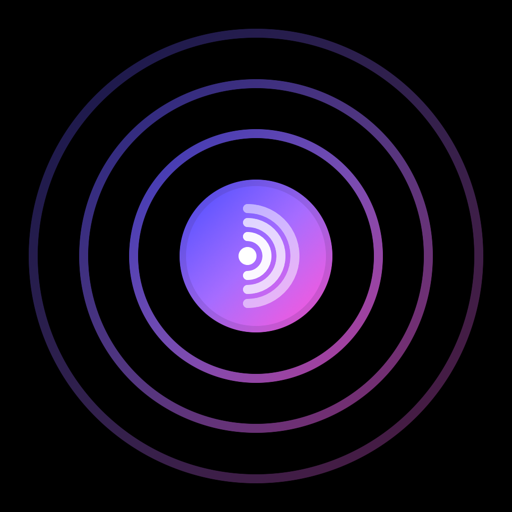

ReverbPrivacy Policy
Effective October 2026
Reverb is an independently developed music player for iPhone. It has no servers and no accounts of its own, it shows no ads, and it runs no analytics. Your library and settings stay on your iPhone and in your own iCloud. The developer never receives them.
Reverb is made and operated by Jason Crane, an individual developer in the United States, reachable at support@3dlibrary.app. For the purposes of the GDPR and similar laws, that is the data controller for this policy. In practice there is little to control, because Reverb never sends your information to the developer.
In short
- No ads, no analytics, no tracking, and no third-party code inside the app.
- No Reverb servers or accounts. The developer can't see your library.
- Your library syncs only through your own private iCloud.
- Songs, previews, search and charts come from Apple.
What Reverb keeps on your iPhone
- Your library: songs you like, playlists you make, artists you follow, albums you save, and your play history (what you played, when, and for how long). Reverb uses it for things like Recently Played and the Radio.
- Your profile: the first name you gave Reverb, the artists you picked when you set it up, and, if you sign in with Apple, what Apple shares with the app (see below).
- Settings: your look, finish, theme and other preferences.
- Music you import: songs you add yourself are copied into Reverb's own folder on your iPhone, which you can see in the Files app. Reverb doesn't send them anywhere.
- Caches: album art and music info Reverb has already loaded, kept for a while so screens open faster.
Your iCloud
If your iPhone is signed in to iCloud, Reverb syncs your library through your private iCloud database, so it shows up on your other devices. That copy lives in your iCloud account, under Apple's protection and Apple's privacy policy. The developer has no access to it.
Sign in with Apple
When you sign in with Apple, Apple gives Reverb a private identifier for your Apple Account, plus the name and email address you choose to share (Apple lets you hide your email). Reverb keeps them only on your iPhone: your first name to personalize Reverb, like naming your radio station, and the identifier to check that you're still signed in. They're never sent to the developer or anyone else. If you set Reverb up without signing in with Apple, the name you type stays on your iPhone in the same way.
Apple Music
If you allow it, Reverb uses Apple Music on your iPhone to play full songs, which needs an Apple Music subscription. Without one, Reverb plays 30-second previews. With the same permission, Reverb can show your Apple Music playlists and liked songs. It reads them through Apple's MusicKit only to show and play them in Reverb, and they're never sent to the developer or to any other company. You can turn them off in Reverb's Settings, or remove the permission in the Settings app under Privacy & Security › Media & Apple Music.
What leaves your iPhone
Besides iCloud and Apple Music above, these are the only services Reverb talks to:
- Apple's music catalog: search, charts, artist and album pages, and song previews come from Apple: the Apple Music catalog (through MusicKit), the iTunes Search API and Apple's chart feeds. These requests include what you searched for or opened and, like any internet request, your IP address. Apple's privacy policy covers them.
- Purchases: Reverb Pro is a one-time purchase made through Apple's App Store. Apple handles the payment, and Reverb only learns from Apple whether Pro is unlocked. The developer never sees your payment details.
The Radio picks songs with Apple's on-device AI model, using your requests and listening history. That runs entirely on your iPhone and nothing about it is sent anywhere. Reverb then finds the picked songs in Apple's catalog, like a search.
What Reverb doesn't do
- No analytics, advertising or tracking, and no third-party SDKs of any kind.
- No Reverb servers, no Reverb accounts, and no copy of your library anywhere except your devices and your iCloud.
- No selling or sharing of your information. Reverb never has it in the first place.
- No access to your microphone, camera, location, photos or contacts.
Deleting your data
In Reverb, open Settings and choose Delete Account & Data. It erases everything Reverb stored on your iPhone and your library in your iCloud, then starts Reverb fresh.
To also disconnect Reverb from your Apple Account, open the Settings app, tap your name, then Sign-In & Security › Sign in with Apple, choose Reverb, and tap Stop Using Apple Account.
Deleting the app removes everything it stored on your iPhone. If you delete the app first, your library stays in your iCloud; reinstall Reverb and use Delete Account & Data to remove it. There is nothing for the developer to delete, because Reverb never sends your data to the developer.
Your rights
Wherever you live, you can ask what information Reverb holds about you, and ask for it to be corrected or deleted, by writing to support@3dlibrary.app. The answer is short: the developer holds nothing about you. Everything Reverb keeps is on your devices and in your iCloud, and you can delete it yourself in the app. Reverb doesn't sell or share personal information, and there is no advertising or tracking to opt out of.
Children
Reverb is a general music app. It isn't directed at children under 13, and the developer doesn't knowingly collect information from them, or from anyone else.
This website
This site has no cookies, analytics or trackers. It's hosted on GitHub Pages, which may log basic technical information such as IP addresses to run and protect the service, under GitHub's Privacy Statement.
Changes
If this policy changes, the new version will be posted at this address with a new effective date.
Contact
Questions about privacy in Reverb: support@3dlibrary.app